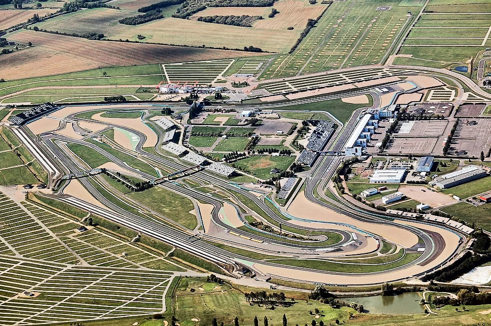
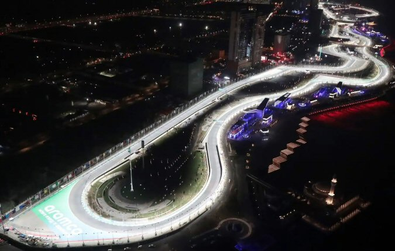
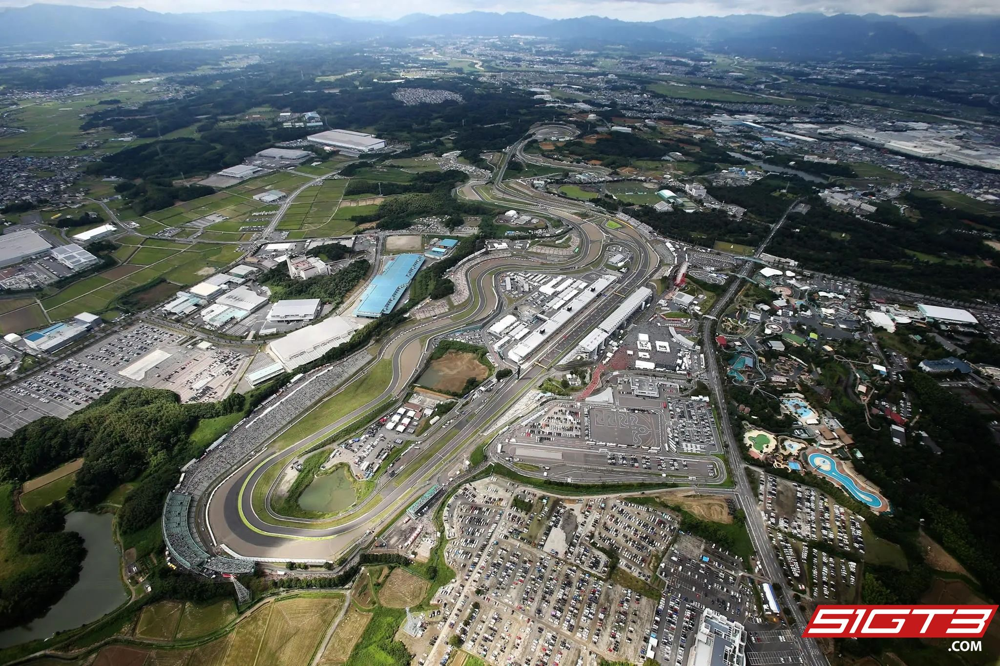
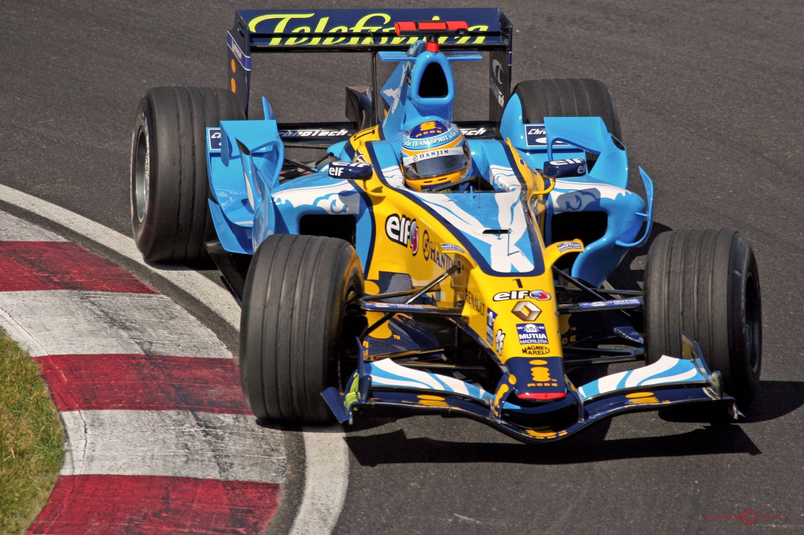

Circuit de Nevers Magny-Cours

Location : Magny-Cours, France
Jeddah Corniche Circuit

Location : Jeddah, Saudi Arabia
Suzuka International Racing Course

Location : Suzuka, Mie Prefecture, Japan
Renault R26

Fernando Alonso driving the R26 in Canada in 2006.